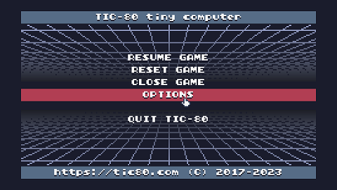
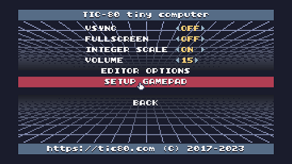
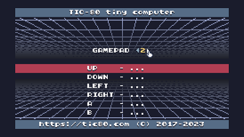
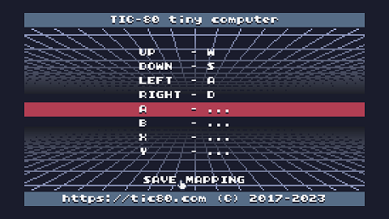

● Movimiento, interactuar, avanzar diálogo: Flechas/WASD
● Movimiento: Flechas
● Acciones: Z, X, A, S
● Pausar juego: Escape
● Reiniciar juego: Ctrl+R
1) Pausar el juego con la tecla Escape.
2) Con el mouse o las flechas del teclado, seleccionar "Options".

3) Seleccionar "Setup Gamepad".

4) Cambiar con las flechas el número de gamepad hasta seleccionar el número 2.

5) Ir hasta los comandos Up (arriba), Down (abajo), Left (izquierda) y Right (derecha), y asignarles a cada uno una tecla.
6) Seleccionar la opción "Save Mapping" para guardar la configuración de teclas.

7) Salir de los menús y reanudar el juego.
Volver